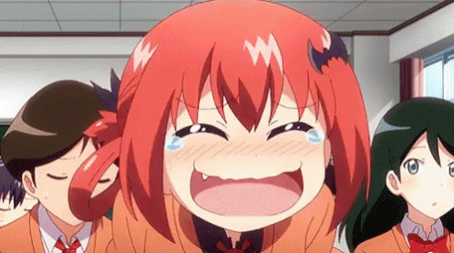

Sobre mim
Caio Schmidt França Fonseca
Sou um estudante de Ciência da Computacão na UVV
Minhas aulas atualmente são:
- Design e Desenvolvimento de Bancos de Dados 1 com o Marcello
- Estrutura de Computadores com o Denis
- Introdução à Ciência da Computação com o Alessandro
- Experiência com o Usuário com a Susi
- Construção de Software para Web com Ricardo
- Lógica para Computação com o Erlon
Meus animes favoritos:
- Hunter x Hunter
- Fullmetal Alchemist Brotherhood
- Kaguya-sama wa Kokurasetai: Tensai-tachi no Renai Zunousen
Algumas imagens que me representam quando estou Feliz/Triste:
